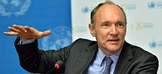
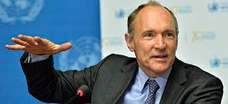

Timothy John Berners-Lee KBE, OM, FRS (TimBL ou TBL) (Londres, 8 de junho de 1955) é um físico britânico, cientista da computação e professor do MIT. É o criador da World Wide Web, tendo feito a primeira proposta para sua criação a 12 de março de 1989.[2][3] Em 25 de dezembro de 1990, com a ajuda de Robert Cailliau e um jovem estudante do CERN, implementou a primeira comunicação bem-sucedida entre um cliente HTTP e o servidor através da internet. Berners-Lee é o diretor do World Wide Web Consortium (W3C), que supervisiona o desenvolvimento continuado da web. Também é o fundador da World Wide Web Foundation e é um pesquisador sênior e titular e fundador da cadeira de 3Com no Laboratório de Inteligência Artificial e Ciência da Computação do MIT (CSAIL).[4] É um diretor da The Web Science Research Initiative (WSRI) e um membro do conselho consultivo do Centro de Inteligência Coletiva do MIT. Em abril de 2009, foi eleito como membro da Academia Nacional de Ciências dos Estados Unidos, sediada em Washington, D.C.[8] Em 2011, foi nomeado como um membro do conselho de administração da Fundação Ford. Em 2004, Berners-Lee venceu o Millennium Technology Prize, o que lhe rendeu um milhão de euros. Em 2017 foi agraciado pela Association for Computing Machinery (ACM) com o Prêmio Turing de 2016, considerado o "Nobel da Computação".